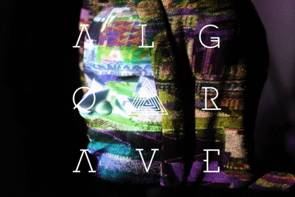
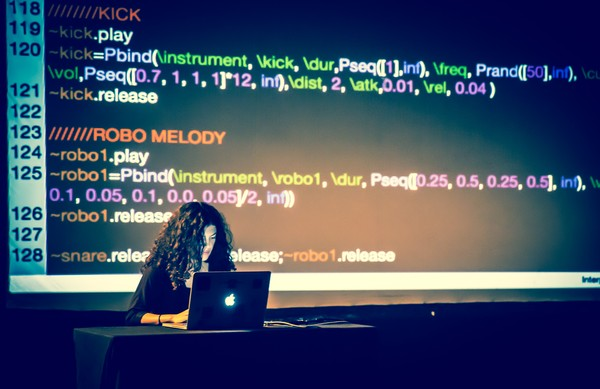
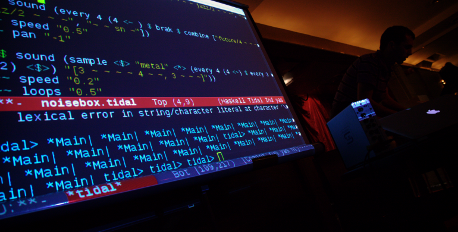

C'est quoi l'algorave ?

Origine et orientation
Un algorave est un événement où les gens dansent sur de la musique générée à partir d'algorithmes, souvent en utilisant des techniques de codage en direct. Alex McLean de Slub et Nick Collins ont inventé le mot "algorave" en 2011, et le
premier événement sous un tel nom a été organisé à Londres, au Royaume-Uni.
L'utilisation de logiciels libres et l'entraide sont au coeur du mouvement. Les logiciels utilisés pour faire de l'algorave sont simples d'accès. Quelque soit le genre de musique il est possible de composer ou live coder (Glitch, Ambient,
FreeJazz, Techno accoustique, les possibilités sont immenses.)
Algorave par le mouvement Algorave


"Algorave est constitué de "sons entièrement ou majoritairement caractérisés par l'émission d'une succession de conditionnels répétitifs". De nos jours, presque toute la musique électronique est produite à l'aide de logiciels, mais avec des
barrières artificielles entre les personnes qui créent les algorithmes logiciels et celles qui font la musique. En utilisant des systèmes conçus pour créer de la musique algorithmique et des visuels, tels que IXI Lang, puredata, Max/MSP,
SuperCollider, Extempore, Fluxus, TidalCycles, Gibber, Sonic Pi, FoxDot et Cyril, ces barrières sont abattues et les musiciens sont capables de composer et de travailler en direct avec leur musique en tant qu'algorithmes. Cela a des bons et
des mauvais côtés, mais une approche différente mène à des endroits intéressants.
Ce n'est pas une idée nouvelle, mais les Algoraves se concentrent sur la création et la danse humaine sur la musique. Les musiciens d'Algorave ne prétendent pas que leur logiciel est créatif, ils assument la responsabilité de la musique
qu'ils font, en la façonnant avec les moyens dont ils disposent.
Plus important encore, l'accent n'est pas mis sur ce que le musicien fait, mais sur la musique et les gens qui dansent sur elle. Les algoraves reprennent les sons
extraterrestres des raves du passé et introduisent des rythmes et des battements extraterrestres et futuristes, créés par des processus étranges et assistés par des algorithmes. C'est aux bonnes personnes sur la piste de danse d'aider les
musiciens à donner un sens à tout cela et à faire le vrai travail créatif pour faire une grande fête."